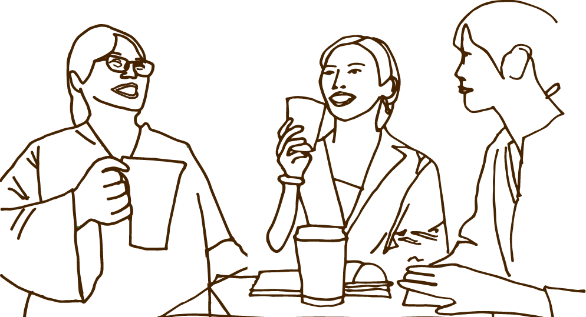

わたしたちのSLE
一緒に笑って生きていくために

わたしたちの未来
SLEになって悲観的になりすぎていませんか？
あなたの幸せのために小さな喜びを見つけて、
生きるコツを一緒に見つけませんか
更新のお知らせ

-
疑いと言われた方へ
難病である全身性エリテマトーデスの疑いです。
と言われたらとても不安ですよね
主治医からの言葉をしっかりお聞きになり
どう付き合ったらいいのか
どんな薬があるのか
もしくはどんな薬がないのかを
尋ねられるとるといいかと思います。
膠原病内科のある大きな病院に紹介状を書いてもらい
受診して検査をすることも一つの手かもしれません
あと、大事なこととして、無理をせずにいてくださいね
ストレスになるようなことは避けてください
医療費がかかると思いますので、高額療養費制度を利用されることをお勧めします診断を受けたばかり方へ
診断を受けたばかりだと絶望感でいっぱいなんじゃないでしょうか？
私が診断を受けたばかりの時は寝たきりのように寝込んでいたので子育てがうまくいかずに悔しい思いをしました。
でもゆっくりゆっくり時間をかけていたら健常者とまではいかなくても、パートで働けれるくらいになってます。
今すぐに治したい気持ちは分かりますが焦ると本当によくないです。
気長に気長にいてくださいね
その中でも気になるのが医療費ですよね。
SLE(全身性エリテマトーデス)です
とお医者さんから言われましたら、特定疾患の医療券の手続きを早めにしてください。
昨年の世帯の所得によって金額は変わりますが難病に関しての診察代、薬代などが月に決まったお金までしか払わなくていい制度があります
特定疾患治療研究事業の医療費助成制度と言います。
病院のソーシャルワーカーさんに聞くのが一番話が進みやすいかと思いますご家族や身近な方へ
ご家族や身近な方に「難病と診断されたり」、「疑いがある」と医者から言われるととても心配になると思います。
この病気は感染しません。
ご家族や身近な方のご協力やご理解がないと生活しにくく、とても精神的に辛い病気です。
全身性エリテマトーデスとは、免疫が異常を起こし自分の細胞をやっつけてしまう病気です。
頭の先から足の先まで、病名の通り、全身に症状が出ます。
皮膚、内臓、神経、関節などその人によって症状は違います。
倦怠感であるダルさはとてもダルいです。理解しがたいくらいダルいです。
寝ないとダルさが取れないので寝ることが多いですがなまけてるわけでは有りません。
治療の一環として心広く見守っていただけたらと思います。
患者様の未来を考えて不安になり過ぎずに
見守り、手助けをしていただけるとご本人も喜びになり生活がしやすくなるかと思います。©2021-2024 わたしたちのSLE. ALL RIGHTS RESERVED.